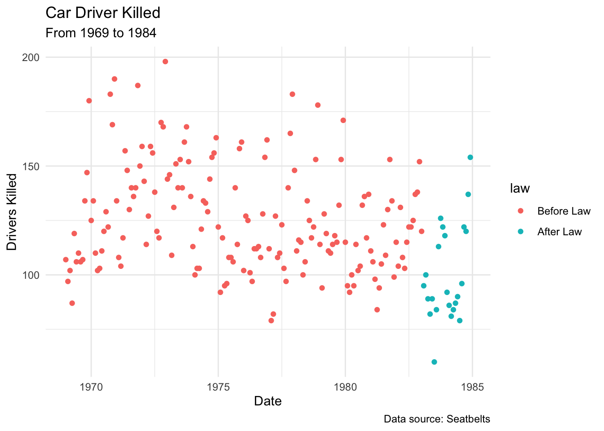
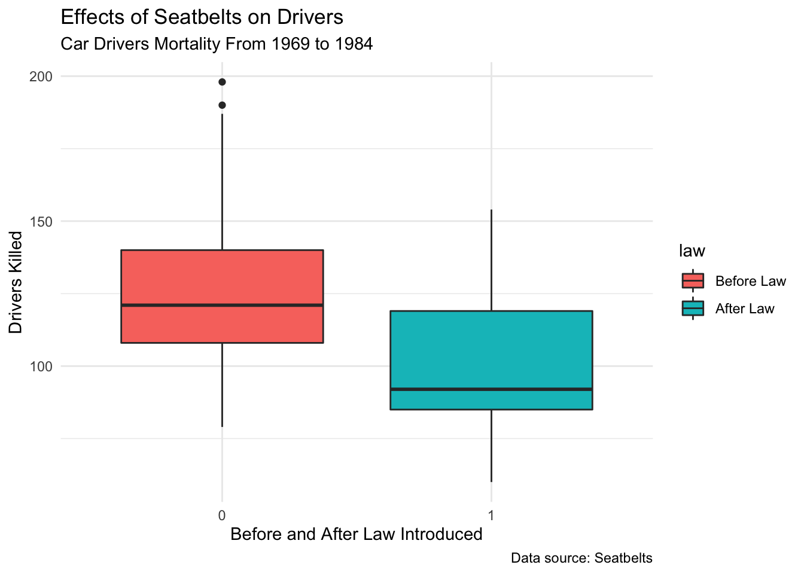
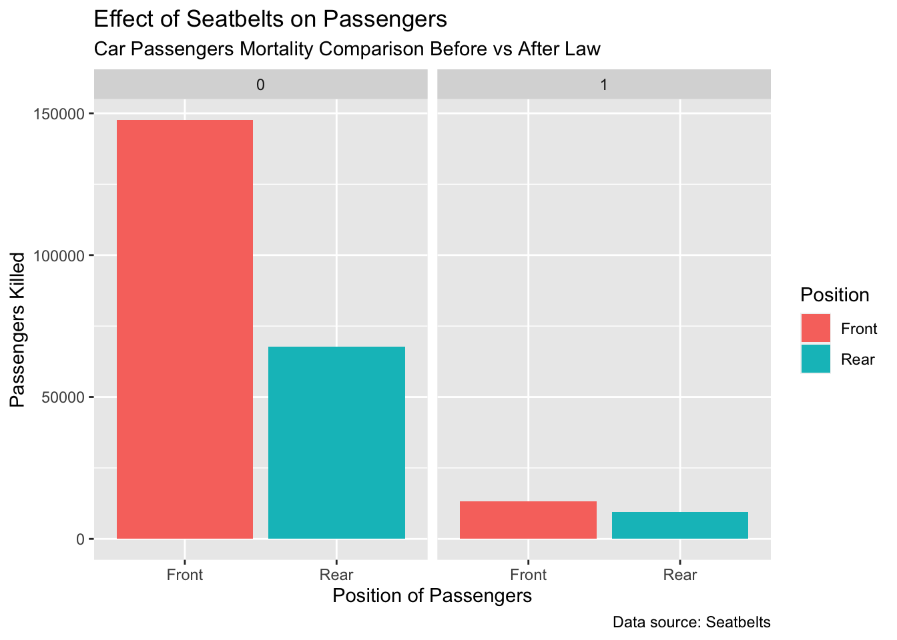

Motor vehicle crashes has always been a leading cause of death throughout the world. It has been founded that wearing seat belts is a great way to prevent death or serious injury in a car crash. (“CDC Transportation Safety,” n.d.) In this analysis, I would love to further explore the effect of wearing seat belts on preventing drivers and passengers’ death.
The data set “UKDriverDeaths” is a built-in time series data set in R based on “Road Casualties in Great Britain 1969-84”. (“UKDriverDeaths:road Casualties in Great Britain 1969-84,” n.d.) It measures the monthly totals of car driver and passengers killed or seriously injured from January 1969 to December 1984. The question I am trying to answer is the effect of wearing set belts which was legislated on January 31st, 1983. Through my analysis, I want to emphasize the importance of wearing seat belts to drivers and passengers.
Attaching package: 'reshape2'
The following object is masked from 'package:tidyr':
smiths
# call up "Seatbelts" time series data setdata("Seatbelts")# convert "Seatbelts" time series to data framedf =data.frame(as.matrix(Seatbelts), Date=time(Seatbelts))#slice_sample(df, n =5)
# subset data setdf$law =as.factor(df$law)sub1 =select(df,c(DriversKilled,law,front,rear,Date))# remove missing datasub1 = sub1 %>%drop_na(.)#group data set by before law and after law#summarize the max, min, mean, etc. by each group sub1 %>%group_by(law) %>%summarize(avg =mean(DriversKilled),q1=quantile(DriversKilled,0.25), q3 =quantile(DriversKilled,0.75),minimum =min(DriversKilled), maximum =max(DriversKilled))
# Scatterplot: Car Drivers Killed from 1969 to 1984ggplot(sub1, aes(x=Date, y=DriversKilled, color=law)) +geom_point() +theme_minimal() +labs(title="Car Driver Killed", subtitle ="From 1969 to 1984",x="Date",y="Drivers Killed", caption ="Data source: Seatbelts") +scale_color_discrete(labels=c("Before Law","After Law"))

# Box plot: Effects of Seatbelts on Driversggplot(sub1, aes(x=law, y =DriversKilled, fill = law)) +geom_boxplot() +theme_minimal() +labs(title="Effects of Seatbelts on Drivers", subtitle ="Car Drivers Mortality From 1969 to 1984",x ="Before and After Law Introduced",y="Drivers Killed", caption ="Data source: Seatbelts") +scale_fill_discrete(labels=c("Before Law","After Law"))

# Bar plot: Effect of Seatbelts on Passengerssub2 = sub1 %>%group_by(law) %>%summarize(Front =sum(front),Rear =sum(rear))sub2melted =melt(sub2, id.var='law')ggplot(sub2melted,aes(x=variable,y = value, fill=variable))+geom_bar(stat="identity",position="dodge") +facet_wrap(~law) +labs(title="Effect of Seatbelts on Passengers ", subtitle ="Car Passengers Mortality Comparison Before vs After Law",x ="Position of Passengers",y="Passengers Killed", caption ="Data source: Seatbelts") +scale_fill_discrete(name ="Position")

Results & Conclusions
From the statistical summary and plots above, I can conclude that the introduction of seat belt legislation reduces the death of drivers. The average death of drivers in car crashes before implementing the law is much lower than the average mortality of drivers after implementing the law. In addition to drivers, the death or incidence of serious injury of passengers, both front and rear, is reduced. Therefore, it is beneficial for both drivers and passengers to wear seat belts to protect themselves from severe car crashes.
R Functions Used In Analysis
The dplyr functions used in the analysis include slice_sample(), select(), group_by(), summarize(), %>%. The tidyr function used in the analysis includes drop_na(). And the ggplot2 functions used in graphing includes geom_points(), geom_boxplot(), geom_bar().